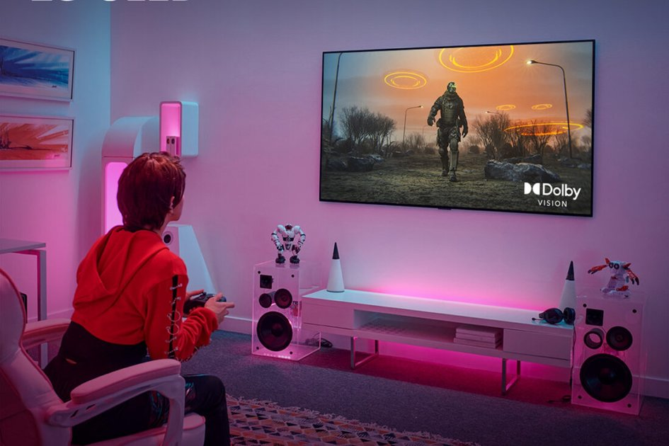
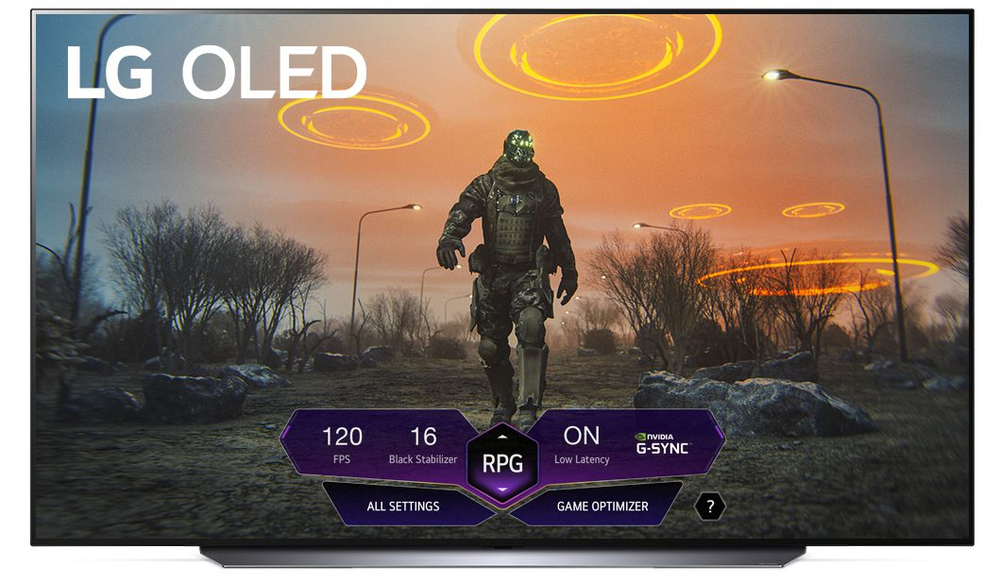
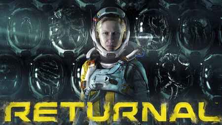
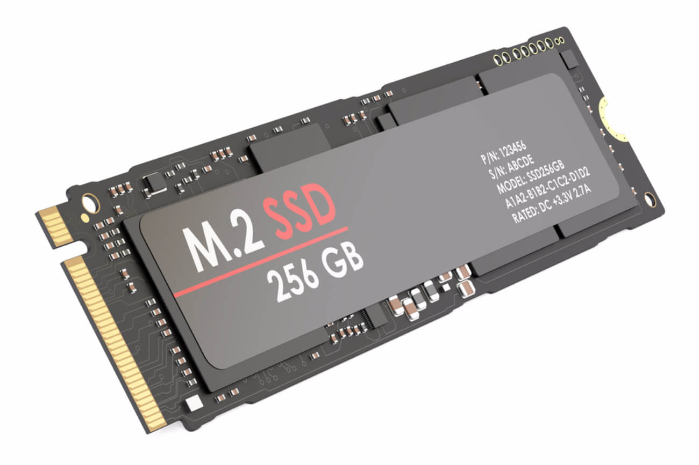

LG actualiza sus televisores OLED 2021 para admitir juegos Dolby Vision de 120Hz
Estará listo cuando finalmente se lancen los juegos compatibles con Dolby Vision.
Las consolas Xbox Series X y Series S de Microsoft admiten 4K Dolby Vision a 120 Hz, pero hay un problema: hasta ahora, ningún televisor ha admitido todas esas cosas a la vez. Ahora, LG ha anunciado que está implementando una actualización de firmware que desbloquea Dolby Vision HDR a 4K 120Hz en sus últimos modelos OLED 2021 de las series C1 y G1 .
Sabíamos que las series G1 y C1 de gama alta de LG deberían ser capaces de jugar en 4K a 120 Hz con Dolby Vision, como señaló recientemente Vincent Teoh de HDTV Test . Sin embargo, los propietarios de Xbox Series X han informado que esos modelos no funcionaban, con un mensaje de error que decía que "la configuración de su televisor no es compatible con Dolby Vision a 4K 120 Hz".
LG le dijo a Teoh en ese momento que estaba probando la funcionalidad y trabajando para llevarla al mercado, y ahora lo ha hecho con la versión de firmware 03.15.27. Eso hace que los modelos de televisores OLED de las series C1 y G1 sean "los primeros en el mundo capaces de soportar Dolby Vision HDR a 4K 120Hz en plataformas compatibles", dijo la compañía
Con el objetivo de que el usuario sepa si va a poder hacer uso de Windows 11, Microsoft ha compartido ha creado una aplicación que permite salir de dudas. La herramienta recibe el nombre de PC Health Check y, al igual que el sistema operativo, es completamente gratuita. Está disponible actualmente para descarga desde la página web de la empresa.

Además, está probando la función en otros modelos 2021, incluida la serie OLED Z1, la serie QNED Mini LED QNED99 y la serie NanoCell NANO99, todas programadas para recibir la actualización en julio. "También se están probando modelos de TV adicionales de 2021 y 2020 para juegos Dolby Vision en 60Hz o 120Hz", agregó la compañía. No se sabe si sus modelos OLED 2019, algunos de los cuales también son compatibles con 4K 120Hz y Dolby Vision, se actualizarán.
Ahora, si tiene una consola Xbox Series X o S y un televisor LG G1 o S1 de la serie 2021, podrá hacer que desaparezca el mensaje de error. Sin embargo, todavía no podrá jugar ningún juego Dolby Vision 4K 120Hz, porque no existe ninguno en este momento. Cuando finalmente lleguen, debería ver no solo una reproducción más fluida, sino también imágenes más brillantes, contraste mejorado y colores más vibrantes y saturados, al igual que ocurre con las películas y series de televisión codificadas con Dolby Vision.
Junto con esa función, el nuevo firmware también presenta Game Dashboard (que se muestra arriba), un menú flotante que ayuda a los propietarios de LG a optimizar la configuración. Funciona en cualquier televisor LG 2021 con Game Optimizer, lo que permite a los usuarios cambiar entre géneros (estándar, FPS, RPG o RTS). También podrá ver el estado de modos como estabilizador de negro, baja latencia y frecuencia de actualización variable. La nueva actualización ahora se está implementando, por lo que si posee un conjunto compatible, debería obtener acceso a todas esas funciones pronto.

Sony compra el desarrollador de 'Returnal' Housemarque
Es el decimotercer estudio que se une a la lista de PlayStation de Sony.
Sony ha adquirido Housemarque, el estudio con sede en Helsinki detrás de los juegos de PlayStation, incluido Returnal para la PS5, y juegos de disparos de estilo arcade como Super Stardust HD y Dead Nation . No se han revelado detalles financieros.
Con la medida, Sony Interactive Entertainment refuerza aún más su lista de juegos internos después de comprar previamente al desarrollador de Ratchet and Clank Insomniac Games en 2019.Antes de eso, adquirió al desarrollador de Horizon Zero Dawn Guerilla Games, cuyo exdirector Hermen Hulst ahora es el jefe de PlayStation Studios - y Sucker Punch , el estudio detrás de Ghost of Tsushima, la épica épica japonesa aclamada por la crítica .
Con la incorporación de Housemarque, Sony Interactive Entertainment ahora cuenta con 13 empresas bajo su estandarte de PlayStation Studios. El acuerdo debería ayudarlo a enfrentarse cara a cara con Microsoft, que recientemente completó una adquisición masiva al comprar ZeniMax, la matriz de Bethesda, por $ 750 mil millones para reforzar su servicio de suscripción Xbox Game Pass .
Después de una serie de juegos clásicos de PlayStation, Housemarque reiteró recientemente sus credenciales con Returnal , una aventura de ciencia ficción AAA para la PS5 que fue recibida con gran éxito. Sony dijo que las operaciones diarias del estudio continuarán a cargo de su actual equipo de administración con aportes del personal de PlayStation Studios.

La tecnología de carga rápida de juegos de Microsoft no llegará a Windows 10
DirectStorage es exclusivo del nuevo sistema operativo de la empresa.
Sony ha adquirido Housemarque, el estudio con sede en Helsinki detrás de los juegos de PlayStation, incluido Returnal para la PS5, y juegos de disparos de estilo arcade como Super Stardust HD y Dead Nation . No se han revelado detalles financieros.
Una de las características más emocionantes relacionadas con los juegos de Windows 11 no llegará a Windows 10. Según PC Gamer , Microsoft ha confirmado que DirectStorage es exclusivo de su nuevo sistema operativo y no estará disponible en Windows 10 como parte de un actualizacion del sistema. Aunque lejos de ser inesperado, sigue siendo una noticia decepcionante dados los beneficios que vienen con DirectStorage.
Anunciada por primera vez como parte de las consolas Xbox Series X / S de Microsoft , la API agiliza las llamadas de E / S para activos 3D entre su SSD y GPU. Como señala ArsTechnica , la promesa de DirectStorage no es solo tiempos de carga más rápidos, sino mejoras a otros elementos técnicos como la distancia de dibujo y la variedad de texturas. La API también permite que los juegos introduzcan activos instantáneamente, lo que permite a los desarrolladores alejarse de los trucos que han utilizado durante décadas para ocultar los tiempos de carga en sus creaciones.
Fuera de Windows 11, habrá un par de otros requisitos que necesitará para aprovechar DirectStorage en su computadora. El jueves, algunos informes sugirieron que la API requeriría un SSD NVMe con al menos 1 TB de almacenamiento, pero ese no parece ser el caso; los requisitos del sistema para Windows 11 no mencionan un requisito de capacidad por el momento.
Lo que sí piden es una GPU DirectX 12 con soporte para Shader Model 6.0. Lo que eso significa es que no necesitará la última tarjeta gráfica para aprovechar DirectStorage, lo cual es una buena noticia considerando lo difícil que ha sido comprar las GPU de las series RTX 30 y RDNA 2 durante el último año. En esa misma nota, sabemos que la API funcionará con unidades PCIe 4.0 y PCIe 3.0 NVMe anteriores . Una vez más, esa es una buena noticia considerando que Intel recién comenzó a admitir el estándar con el lanzamiento de sus nuevos chips Rocket Lake .